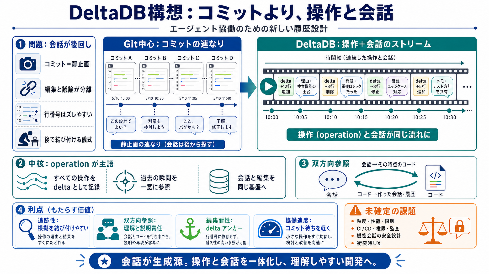

DeltaDB is a new kind of version control. Where Git captures a ...
Where Git captures a snapshot at each commit, DeltaDB captures every keystroke and operation in between as a fine-graine…

Where Git captures a snapshot at each commit, DeltaDB captures every keystroke and operation in between as a fine-graine…
# Software Is Made Between Commits — Zed's Blog | daily.dev. # Software Is Made Between Commits — Zed's Blog. Nathan Sob…
DeltaDB From Zed (the Code Editor). From a post on Zed.dev: Introducing DeltaDB: Operation-Level Version Control:. > Our…
Zed's DeltaDB Rebuilds Version Control Around AI Agent Conversations. It was never built for a world where an AI agent r…
# Software is made between commits. Be among the first to try DeltaDB, a version control system that records the work as…